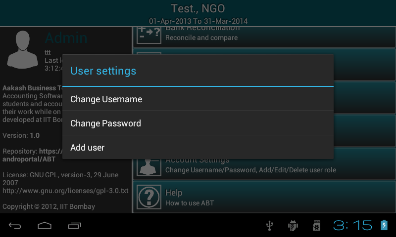
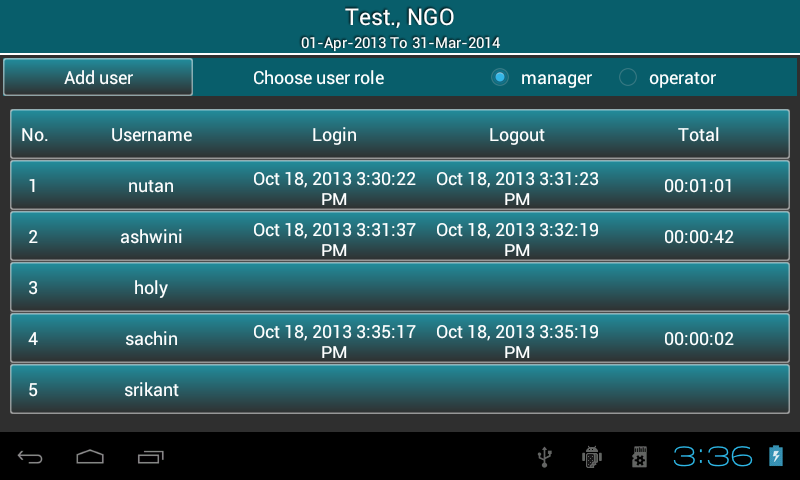
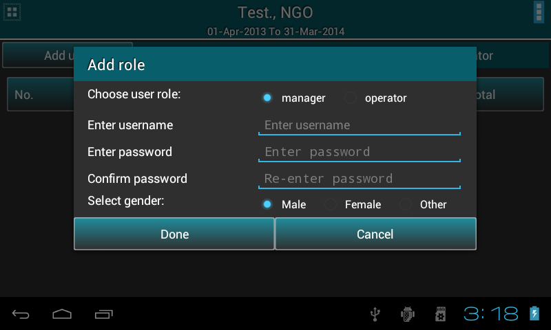
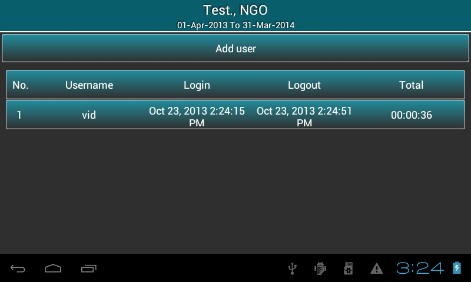

As Useraccountsettings option is selected, it prompts a dialog with three options ie. Changeusername, Changepassword (to change own username and password) and adduser.

As adduser is clicked, all the details about last login and logout time of manager and operator are displayed in the
list as per the seleted radio button ie. manager or operator.

Admin can add user ie. manager or operator using add user button.

Admin can change username or password of any user by clicking the respective user row from the list .
Except rollover and deleteexistingorganisation, manager can access all other options.
As Useraccountsettings option is selected, it prompts a dialog with three options ie. Changeusername, Changepassword (to change own username and password) and adduser.
As adduser is clicked, all the details about last login and logout time of operator are displayed in the
list.

Manager can add operator using add user button.
Manager can change username or password of operator by clicking the respective user row from the list .